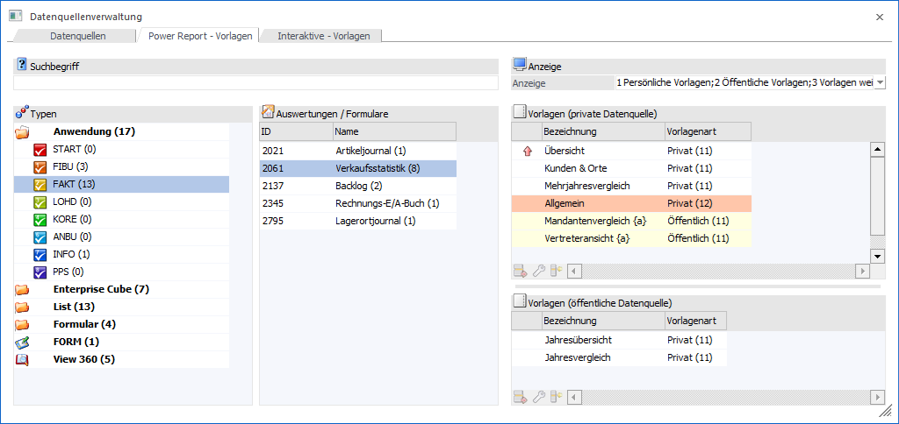
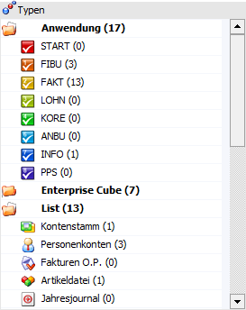
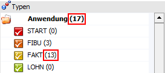
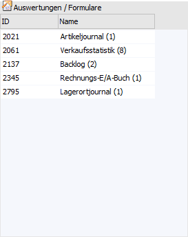
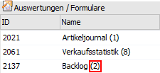
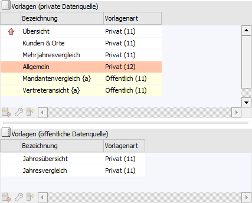
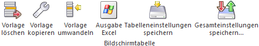

In dem Register "Power Report - Vorlagen" werden die bestehenden Vorlagen des Power Reports angezeigt. Hierüber hinaus stehen eine Vielzahl von Verwaltungstools zur Verfügung, wie z.B.:
ü Löschen von Vorlagen
ü Kopieren von Vorlagen
ü Exportieren bzw. Importieren von Vorlagen

Das Register ist hierbei in die folgenden Bereiche untergliedert:
ü Suche und Anzeige
ü Tabelle "Typen"
ü Tabelle "Auswertungen / Formulare"
ü Tabelle "Vorlagen" / "Vorlagen (private Datenquelle)" / "Vorlagen (öffentliche Datenquellen)"
Suche und Anzeige
In diesem Bereich kann die Suche und die Anzeige gesteuert werden.
Ø Suchbegriff
Durch Eingabe und Bestätigung eines Suchbegriffs wird in den Vorlagen eine Volltextsuche durchgeführt und das Suchergebnis angezeigt.
Hinweis
Standardmäßig wird in der Bezeichnung der Vorlage nach dem Suchbegriff gesucht. Soll die Suche in anderen bzw. weiteren Spalten erfolgen, so kann dieses über die Datenquellenverwaltung - Einstellungen definiert werden (Bereich "Suchoptionen - Suche erfolgt bei…").
Ø Anzeige
Mit Hilfe der hier zur Verfügung stehenden Mehrfachauswahl kann definiert werden, welche Vorlagen dargestellt werden sollen. Die gewählte Einstellung wird hierbei benutzerspezifisch gespeichert.
ü Persönliche Vorlagen
Durch
Aktivierung dieser Option werden in den Vorlagen-Tabellen die persönlichen
Vorlagen angezeigt.
ü Öffentliche Vorlagen
Durch
Aktivierung dieser Option werden in den Vorlagen-Tabellen die öffentlichen
Vorlagen des angezeigt. Die Darstellung solcher Zeilen erfolgt mit einer gelben
Unterlegung.
ü Vorlagen weiterer
Benutzer
Handelt es sich bei dem aktuellen Benutzer um einen
Volladministrator oder um einen Benutzer mit dem Teiladministrationsrecht
"Datenadministration", so steht diese Option zur Verfügung. Durch Aktivierung
werden in den Vorlagen-Tabellen alle Vorlagen der anderen Benutzer angezeigt
(die Darstellung solcher Zeilen erfolgt mit einer orangen Unterlegung).
Tabelle "Typen"

In der Tabelle werden die Vorlagen gemäß der folgenden Typen zusammengefasst, wobei durch Anwahl eines Typs die Tabelle "Auswertungen / Formulare" entsprechend gefüllt wird:
ü Anwendung
ü Enterprise Cube
ü List
ü Formular
ü FORM
ü View 360
Hinweis
Die Zahl hinter dem Bereich bzw. Typ gibt an, wie viele Vorlagen innerhalb des Bereichs bzw. Typs bereits vorhanden sind.

Tabelle "Auswertungen / Formulare"

In der Tabelle werden alle Auswertungen bzw. Formulare, gemäß dem zuvor gewählten Typ (siehe Tabelle "Typen"), angezeigt, für welche es bereits Vorlagen gibt. Durch Anwahl einer Auswertung bzw. eines Formulars werden die Vorlagen-Tabellen entsprechend gefüllt.
Hinweis
Die Zahl hinter der Auswertung / dem Formular gibt an, wie viele Vorlagen für die Auswertung vorhanden sind.

Tabelle "Vorlagen (Formular)" / "Vorlage (View 360)" / "Vorlagen (private Datenquelle)" / "Vorlagen (öffentliche Datenquellen)"

In den Tabellen werden alle Power Report-Vorlagen, gemäß der zuvor gewählten Auswertung / Formular (siehe Tabelle "Auswertungen / Formulare"), angezeigt. Handelt es sich um Vorlagen auf Basis einer Auswertung, so gibt es die Unterscheidung zwischen Vorlagen "für" private und öffentliche Datenquellen.
Ø farbliche Hinterlegung
Mit Hilfe der folgenden farblichen Hinterlegungen wird dargestellt, von welchem Benutzer die Vorlage stammt:
ü - private Vorlage des Benutzers
ü - öffentliche Vorlage
ü  - private Vorlage eines anderen
Benutzers
- private Vorlage eines anderen
Benutzers
Ø Standardvorlage
Mit Hilfe des Symbols  wird die Standardvorlage
gekennzeichnet. Per Doppelklick kann der Standard hierbei umdefiniert werden,
wobei es pro Benutzer nur eine private und eine öffentliche Standardvorlage
geben kann.
wird die Standardvorlage
gekennzeichnet. Per Doppelklick kann der Standard hierbei umdefiniert werden,
wobei es pro Benutzer nur eine private und eine öffentliche Standardvorlage
geben kann.
Ø Bezeichnung
In dieser Spalte wird die Bezeichnung der Vorlage angezeigt.
Hinweis
Handelt es sich um einen Vorlagen mit "{}" (z.B. "Vertreteransicht {a}"), so handelt es sich um eine öffentliche Vorlage, welche von dem Benutzer (z.B. "a") veröffentlich wurde.
Ø Vorlagenart
Hier wird dargestellt, ob es sich um eine öffentliche oder eine private Vorlage handelt. Die Zahl hinter dem Wort "Privat" bzw. "Öffentlich" gibt die Nummer des Benutzers an.
Ø ID [optional]
An dieser Stelle wird die interne ID (Nummer) der Vorlage angezeigt.
Ø GUID [optional]
Mit Hilfe dieser Spalte wird die interne Schlüsselnummer der Vorlage angezeigt.
Tabellenbuttons

Ø Vorlage löschen
Mit Hilfe dieses Buttons kann die ausgewählte Vorlage gelöscht werden.
Hinweis
Handelt es sich bei dem aktuellen Benutzer nicht um einen Volladministrator oder um einen Benutzer mit dem Teiladministrationsrecht "Datenadministration", so können nur eigene Vorlagen gelöscht werden.
Ø Vorlage kopieren
Durch Anwahl dieses Buttons können Vorlagen kopiert werden (weitere Informationen entnehmen Sie bitte dem Kapitel Vorlage kopieren).
Ø Vorlage umwandeln
Eine Power Report-Vorlage steht immer im Kontext zu einer persönliche oder einer öffentlichen Datenquelle. Soll diese Art der Zuordnung geändert werden, so kann dieses mit Hilfe des Tabellenbuttons "Vorlage umwandeln" geschehen (weitere Informationen entnehmen Sie bitte dem Kapitel Vorlage umwandeln).
Ø Ausgabe Excel
Durch Anwahl des Buttons "Ausgabe Excel" wird der Inhalt der Tabelle an Microsoft Excel übergeben.
Ø Tabelleneinstellungen speichern
Die Spalten einer Tabelle können grundsätzlich an beliebige Positionen verschoben, bzw. in der Breite entsprechend angepasst werden. Durch Anwahl des Buttons "Tabelleneinstellungen speichern" werden die Einstellungen benutzerspezifisch gespeichert und bei dem nächsten Aufruf des Programmpunktes wieder vorgeschlagen.
Ø Gesamteinstellungen speichern
Im Gegensatz zu "Tabelleneinstellungen speichern" können mit "Gesamteinstellungen speichern" mehrere Tabellenaufbauten gespeichert und nach Wunsch geladen werden. Zusätzlich werden Sonderfunktionen der Tabelle (z.B. "Spalte gruppieren") ebenfalls bei der Speicherung bedacht.